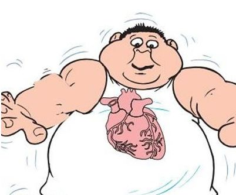

身体每天要呼进成分复杂的空气、吃下各种各样的食物等等，虽然很多营养被我们吸收，但是也有很多杂质一起被摄入体内，长期下来在我们的体内累积大量“垃圾”，需要排出。中国健康养生堂教你如何将您的五脏六腑“打扫干净”。
一、心
心脏就是健康。只有心脏健康，才能使机体发挥正常的生理功能。
检查心脏是否需要打扫
1、舌头溃疡。中医认为舌和心脏的关系最为密切，所以溃疡长在舌头上，通常认为是心脏有内火，或是火毒。
2、额头长痘。额头是心脏管辖的一个属地，心火旺盛成为火毒时，这个属地也会沸腾，于是此起彼伏地出现很多痘痘。
3、失眠，心悸。心脏处于不停的工作中，当火毒停留于心而无法排除时，睡眠不会安稳。
4、胸闷或刺痛。心脏内出现瘀血也是一种毒素，就像是在公路上堵车，轻一些的是胸闷，重一些的则会出现刺痛。
如何打扫心脏中的垃圾
1、吃苦排毒。首推莲子芯，它味苦，可以发散心火，虽然有寒性，但不会损伤人体的阳气，所以一向被认为是最好的化解心脏热毒的食物。可以用莲子芯泡茶，不妨再加些竹叶或生甘草，能增强莲子芯的排毒作用。
2、按压心脏排毒要穴。这是指少府穴，位置在手掌心，第4、5掌骨之间，握拳时小指与无名指指端之间。按压这个穴位不妨用些力，左右手交替。
3、绿豆利尿排毒。绿豆可以通过利尿、清热的办法，来化解并排出心脏的毒素，但吃绿豆时要用液体的形式，例如绿豆浆或绿豆汤，绿豆糕的效果会差一些。
中午11~13点是心脏最强的时间，可以吃些保心、助排毒的食物，例如茯苓、坚果、黄豆、黑芝麻、小枣、莲子等。
二、肝
肝脏就是负责排毒功能的，肝脏参与人体内部调节。很多食物都可以有助于排肝毒，人们经常爱说“清肝明目”，有一副好肝，才会有一双漂亮的眼睛。

检查肝脏是否需要打扫
1、指甲表面有凸起的棱线，或是向下凹陷。中医认为“肝主筋”，指甲是“筋”的一部分，所以毒素在肝脏蓄积时，指甲上会有明显的信号。
2、乳腺出现增生，经前乳腺的胀痛明显增加。乳腺属于肝经循行路线上的要塞，一旦肝经中有“毒”存在，乳腺增生随即产生，尤其在经血即将排出时，会因气血的充盛而变得胀痛明显。
3、情绪容易抑郁。肝脏是体内调控情绪的脏器，一旦肝内的毒不能及时排出，阻塞气的运行，就会产生明显的不良情绪。
4、偏头痛，脸部的两侧长痘痘，还会出现痛经。脸部两侧以及小腹，是肝经和它的搭档胆经的“一亩三分地”，一旦肝的排毒不畅快，自己的后院就会先着火。
如何打扫肝脏中的垃圾
1、吃青色的食物。按中医五行理论，青色的食物可以通达肝气，起到很好的疏肝、解郁、缓解情绪作用，属于帮助肝脏排毒的食物。中医专家推荐青色的橘子或柠檬，连皮做成青橘果汁或是青柠檬水，直接饮用就好。
2、枸杞提升肝脏的耐受性。除了排毒之外，还应该提升肝脏抵抗毒素的能力。这种食物首推枸杞，它具有很好的保护肝脏的作用，可以提升肝脏对毒素的耐受性。食用时以咀嚼着吃最好，每天吃一小把。
3、按压肝脏排毒要穴。这是指太冲穴，位置在足背第一、二跖骨结合部之前的凹陷中。用拇指按揉3~5分钟，感觉轻微酸胀即可。不要用太大的力气，两只脚交替按压。
4、眼泪排毒法。相较于从不哭泣的男人，女人寿命更长，这不能不说和眼泪有关系。中医早已有了这个认识，而且也被西方医学所证实。作为排泄液的泪液，同汗液和尿液一样，里面确实有一些对身体有害的生化毒素。所以，难受时、委屈时、压抑时就干脆哭出来吧。对于那些“乐天派”，周末的午后看一部悲情的电影，让泪水随着情节流淌也是一种主动排毒方式。
5、吃用灵芝排毒法。灵芝能促进肝脏对药物、毒物的代谢，对于中毒性肝炎有确切的疗效。尤其是慢性肝炎，灵芝可明显消除头晕、乏力、恶心、肝区不适等症状，并可有效地改善肝功能，使各项指标趋于正常。所以，灵芝可用于治疗慢性中毒、各类慢性肝炎、肝硬化、肝功能障碍。
晚上11点-1点之间是肝脏的排毒时间，这段时间要熟睡才可以，不要熬夜。
三、脾
脾统血，是人体的免疫器官，本身的疾病较少见，一旦出现问题，人体整体健康都会亮起红灯，因为平时不能忽略保养脾脏。
检查脾脏是否需要打扫
1、面部长色斑。长斑的女性通常消化系统能力弱一些。
2、白带过多。脾主管体内排湿，如果湿气过多，超出了脾的能力，就会出现体内湿气过盛，白带增多是其中的一个体现。
3、脂肪堆积。脂肪在中医里另有一个名字：痰湿，是由于脾的消化功能不佳，不能及时把垃圾毒素排出体外而产生的。有效的减肥必须围绕恢复脾胃正常代谢痰湿的主题来做，否则就会反弹。
4、口气明显，唇周长痘或溃疡。口唇周围都属于脾，当脾中的毒素无法排出体外，蓄积的毒素就要找机会从这些地方爆发出来。
如何打扫脾脏中的垃圾
1、吃酸助脾脏排毒。例如乌梅、醋，这是用来化解食物中毒素的最佳食品，可以增强肠胃的消化功能，使食物中的毒素在最短的时间内排出体外。同时酸味食物还具有健脾的功效，可以很好地起到“抗毒食品”的功效。
2、按压脾脏排毒要穴。这是指商丘穴，位置在内踝前下方的凹陷中，用手指按揉该穴位，保持酸重感即可，每次3分钟左右，两脚交替做。
3、饭后走一走。运动可以帮助脾胃消化，加快毒素排出的速度，不过需要长期坚持，效果才会更好。
餐后是最容易产生毒素的时刻，食物如果不能及时的消化或是吸收，毒素就会积累很多。除了饭后走一走，因为甘味健脾，还可以在吃完饭1小时吃1个水果，帮助健脾、排毒。
四、肺
在所有器官中，肺的自我保护能力最差，可以说是最受委屈的一个器官。吸烟是肺部最大的污染源，正常人的肺是红色的，烟民的肺则完全被熏黑了!尼古丁、二氧化硫等所有吸入的有害物质，都可以看成附着在肺上的脏东西，肺肯定是所有器官中最脏的一个!

其次是空气污染。你呼吸的每一口空气都可能将漂浮的颗粒、有害气体带进体内。虽然肺叶上排列的细小纤毛能将一些污染物、细菌清扫出去。但如果长时间处于空气污染的环境中，即使再坚强的肺，也会受不了。此外，人们的衣食住行、四季交替都对肺有影响。如果不注意就可能引起支气管炎、哮喘、肺结核等，严重的还会导致癌变。”
检查肺脏是否需要打扫
1、皮肤呈锈色，晦暗。中医认为肺管理全身的皮肤，皮肤是否润泽、白皙，都要依靠肺的功能良好。当肺中毒素比较多时，毒素会随着肺的作用沉积到皮肤上，使肤色看起来没有光泽。
2、便秘。中医认为，肺脏和大肠是一套系统，当上面肺脏有毒素时，下面肠道内也会有不正常淤积，就出现了便秘。
3、多愁善感，容易悲伤。毒素在肺，会干扰肺内的气血运行，使得肺脏不能正常舒畅胸中的闷气，被压抑得多愁善感起来。
如何打扫肺脏中的垃圾
1、萝卜是肺脏的排毒食品。在中医眼中，大肠和肺的关系最密切，肺排出毒素程度取决于大肠是否通畅，萝卜能帮助大肠排泄宿便，生吃或拌成凉菜都可以。
2、百合提高肺脏抗毒能力。肺脏向来不喜欢燥气，在燥的情况下，容易导致积累毒素。蘑菇、百合有很好的养肺滋阴的功效，可以帮肺脏抗击毒素，食用时加工时间不要过长，否则百合中的汁液会减少，防毒效果要大打折扣。
3、多吃苹果。通过研究表明，经常吃苹果的人咳嗽、生痰的几率比不经常吃的人低33%，这是因为苹果皮中的果胶和抗氧化物能减轻肺部的炎症反应。
4、按压肺脏排毒要穴。有利肺脏的穴位是合谷穴，位置在手背上，第1、2掌骨间，当第2掌骨桡侧的中点处，可以用拇指和食指捏住这个部位，用力按压。
5、排汗解毒。肺管理皮肤，所以痛痛快快地出一身汗，让汗液带走体内的毒素，会让我们的肺清爽起来。除了运动以外，出汗的方法还可以是热水浴，浴前水中加一些生姜和薄荷精油，使汗液分泌得更畅快，排出身体深处的毒素。
6、深呼吸。每次呼吸时，肺内都有残余的废气无法排出，这些废气相对于那些新鲜、富含氧气的空气来讲，也是一种毒素。只需几个深呼吸，就能减少体内废气的残留。
7、阴霾天气少出门。如果要出门最好戴口罩，尽量避开早上这段时间。
8、多喝水，不吸烟。如果经常处于吸烟环境，一定要多喝水，可以加速排出体内有害物质。有数据显示，八成肺癌的成因是烟草，因此建议不要吸烟。
肺脏最强的时间是早7点～9点，此时最好能够通过运动排毒。在肺最有力的时候进行慢跑等有氧运动，能强健肺排出毒素的功能。加逗比美女微信："funv79"，寂寞的夜晚你可能会需要她!
五、肾
肾脏的主要功能是排泄和内分泌。一旦肾功能出现问题，会导致排水不畅，毒素出不来，这时多余的水分和积蓄下来的毒素对全身健康都有影响，产生相应症状，叫做尿毒症，表现为恶心呕吐、心慌憋气等，甚至有生命危险。
检查肾脏是否需要打扫
1、月经量少，或经期短，颜色暗。月经的产生和消失，都是肾功能是否旺盛的表现，如果肾脏中有很多毒素，经血就会减少。
2、水肿。肾脏管理体内的液体运行，肾脏堆积毒素后，排出多余液体的能力降低，就出现了水肿。
3、下颌长痘。脸部下颌部位由肾管辖，肾的排毒不足，多余的毒素会表现在下颌部位。
4、容易疲倦。身体内的毒素消耗了肾的能量，肾脏提供的能量减少，于是出现体倦，神疲思睡，四肢无力。
如何打扫肾脏中的垃圾
1、肾脏排毒食品：冬瓜。冬瓜富含汁液，进入人体后，会刺激肾脏增加尿液，排出体内的毒素。食用时可用冬瓜煲汤或清炒，味道尽量淡一些;每天一杯橙汁，可以增强尿液中柠檬酸水平，减少结石几率。
2、肾脏抗毒食品：山药。山药虽然可以同时滋补很多脏器，但最终还是以补肾为主，经常吃山药可以增强肾脏的排毒功能。拔丝山药是很好的一种食用方法，用焦糖“炮制”过的山药，补肾抗毒的功效会相应增强。
3、按压肝脏排毒要穴：涌泉穴。这是人体最低的穴位，如果人体是一幢大楼，这个穴位就是排污下水管道的出口，经常按揉它，排毒效果明显。涌泉穴位置在足底的前1/3处(计算时不包括足趾)，这个穴位比较敏感，不要用太大的力度，稍有感觉即可，以边按边揉为佳，持续5分钟左右即可。
4、少吃盐，多喝水。饮食中的盐分95%是由肾脏代谢的，摄入太多盐会使肾脏的负担加重。养成多喝水的习惯不仅能预防肾结石，也有利于尿液变淡，从而保护肾脏。
5、切忌乱吃药。引起尿毒症的五大原因是肾炎、糖尿病、高血压、多囊肾和乱吃药。
肾脏最适合排毒的时间是早晨5～7点，身体经过一夜的修复，到了早晨毒素都聚集在肾脏，所以早晨起来最好喝一杯白水，冲刷一下肾脏，将毒素排出体外。
六、小肠
小肠分清浊，将水分分给膀胱，而身体垃圾分给大肠，而精华就供给脾脏。小肠是否健康直接关系着外表，爱美的女生如果没有一副好小肠，就容易出现肤色暗沉、出现痘痘等等。
检查小肠是否需要打扫
1、 下巴出现痘痘。
2、 便秘，肤色暗沉。
如何打扫小肠中的垃圾
1、午后可以后蹬腿
在午后的这两个小时里(13 ～ 15 点)，小肠经开始“值班”，此时是强健小肠的“最佳时期”，大量喝水固然重要，还有一个小窍门--午餐后20 分钟，用力地后蹬腿，就可以刺激小肠经，让小肠有效蠕动。而且，还可以解决午后的春困问题，让下午的生活、工作更加清醒。
2、 多喝水，当人体饮水量不足时，小肠的蠕动能力就会降低，这种“分类”工作就不会做到最佳，不但营养无力及时输送，连糟糠也无丽及时输送给大肠，排便也就成了每日的最大问题，从而使下巴出现痘痘。
3、早上起来洗漱完毕后，先喝一大杯白开水。基本半个小时~二个小时内就会有排便的感觉，效果十分好。
七、胆
血液中废物容易形成胆石。一旦胆汁被堆积物阻塞严重，体内的胆固醇就会沉淀形成晶体，就会形成大小各异的“石头”，即胆结石。最常见的有胆固醇结石和胆红素结石，前者易形成坚硬如石的物质，而后者多呈泥沙状，多与胆管内入侵的细菌等“脏物”有关。
检查胆是否需要打扫
1、 乏力、易倦、思睡等。肝细胞损害肝功能异常，致血清转氨酶等酶类增高，而胆碱脂酶降低，就会有上述表现。
2、 肝功能异常引起消化功能异常，致食欲减退、厌油腻、恶心、呕吐、腹泄或便秘等症状。
3、 胆色素代谢异常，可致黄疸，主要症状变现为为皮肤、巩膜等组织的黄染，黄疸加深时，尿、痰、泪液及汗液也被黄染，唾液一般不变色。
如何打扫胆中的垃圾
1、少吃高脂肪类的食物。在一些胆囊病症中，大多是因为吃了太多的高脂肪食物而导致的。因而，高脂肪类的食物要少吃，这才是保护胆囊最基本的措施。
2、多吃高纤维的食物，如芹菜、谷物、红薯等。少吃动物内脏、蛋黄等富含胆固醇的食物。
3、喝水消除胆囊结晶体。每天喝8杯水或果菜汁，它会帮助胆囊液化结石，并排出体外。
4、少坐多活动。否则容易引起腹壁松弛，内脏下垂，时间久了会压迫胆管，使胆汁排泄不畅、沉积而形成结石。
5、便前便后都要洗手。肠道感染后，一些肠道细菌、寄生虫就会游走至胆管、胆囊，从而引起结石。
6、坚决不熬夜，凌晨1～3点的胆排毒时间，熟睡中，身体自然就会很好地排毒了。
八、胃
胃里有一种名为幽门螺旋杆菌的细菌，不干净的饮食是它的主要源头，全世界约50%的人胃部都有这种细菌繁殖。大部分胃癌、胃炎、胃溃疡患者体内都有幽门螺杆菌存在。大多数人感染后没有什么症状，但10%—15%的感染者会得胃溃疡。
检查胃是否需要打扫
1、 疼痛。这是胃病最常见的症状之一。导致隐痛的原因很多，表现形式也复杂。病因包括受寒、气滞、血瘀等，表现形式有隐痛、刺痛、绞痛。
2、 气胀。这也是胃病最常见的症状之一。如果脾胃运化失职，或者因寒受阻，或者其他因素，都会导致胃内的气体不能及时、不能正常排出，从而导致气胀。
3、 食胀。由于各种各样的因素，胃不能正常消化食物，或者或者肠胃蠕动过慢，都会导致食胀。
4、 舌淡无味。中医理论认为，脾开窍于口，如果脾受困，或其他原因导致脾虚，都会引起患者口不知味，无欲食。
5、 口苦。这是肝胆受热产生的典型症状，是胆气上泛的表现。西医检查规类为胆汁反流性胃炎。
6、 面色。胃病患者病史过长，面色容易萎黄、黯淡无光。
7、 舌苔颜色。正常的舌头，舌体柔软，活动自如，颜色淡红光泽，有润泽，舌苔薄白。胃病初期，舌苔黄，口有异味，此为实证。时间久后，舌苔转白，便秘者舌质肥厚，疼痛者舌质有瘀斑。
8、 恶心呕吐。饮食失常、寒温不适引起的胃病，容易造成患者恶心呕吐。
9、 打嗝嗳气。跟情绪有关，或者因吵架、压力过大等导致的胃病患者容易有此症状。
10、 胸闷。以气不顺、滞留胸腔为特征，脾气暴躁者、情绪不佳者易得。
11、 噎膈。脾胃阴虚、或者寒湿困脾者易得。
12、 反酸烧心。这是胃病患者最常见的症状之一。有胃酸、泛酸、反酸、吐酸之分。胃热者有烧心感。
13、 乏力、四肢无力。久病体虚，常感觉乏力，不思动，四肢出现无力感。
14、 大便。阴虚、实热导致大便干结，如大便稀，则脾运化失常。
如何打扫胃中的垃圾
1、 不熬夜，保持好心情。当精神紧张、过度疲劳、情绪不佳时，会使胃酸分泌增多，会有反酸水、烧心、恶心等不适。此外，要少吃过甜、咸、辣、酸、冷、烫的食物。
2、 少吃油炸食物：因为这类食物不容易消化，会加重消化道负担，多吃会引起消化不良，还会使血脂增高，对健康不利。
3、 少吃腌制食物：这些食物中含有较多的盐分及某些可致癌物，不宜多吃。
4、 少吃生冷食物刺激性食物：生冷和刺激性强的食物对消化道黏膜具有较强的刺激作用，容易引起腹泻或消化道炎症。
5、 规律饮食：研究表明，有规律地进餐，定时定量，可形成条件反射，有助于消化腺的分泌，更利于消化。
6、 定时定量：要做到每餐食量适度，每日3餐定时，到了规定时间，不管肚子饿不饿，都应主动进食，避免过饥或过饱。
7、 温度适宜：饮食的温度应以“不烫不凉”为度。
8、 细嚼慢咽：以减轻胃肠负担。对食物充分咀嚼次数愈多，随之分泌的唾液也愈多，对胃黏膜有保护作用。
9、 饮水择时：最佳的饮水时间是晨起空腹时及每次进餐前1小时，餐后立即饮水会稀释胃液，用汤泡饭也会影响食物的消化。
10、 注意防寒：胃部受凉后会使胃的功能受损，故要注意胃部保暖不要受寒。
11、 避免刺激：不吸烟，因为吸烟使胃部血管收缩，影响胃壁细胞的血液供应，使胃黏膜抵抗力降低而诱发胃病。应少饮酒，少吃辣椒、胡椒等辛辣食物。
九、大肠
肠道中栖息着数以亿计的细菌，比如，益生菌和致病菌等，前者的作用在于平衡各菌群，维持肠道健康。但如果饮食不规律，人体抵抗力下降，这些益生菌就会转变为致病菌，引起腹泻、胃溃疡等疾病。
尤其是大肠，本身就是一个很脏的器官。因为体内最终代谢的废物，也就是大便会进入大肠中。所以平时要非常注重大肠的“打扫”工作。
检查大肠是否需要打扫
1、经常打嗝、腹胀、放屁多而臭等现象;
2、出现腹泻、胃溃疡等肠胃疾病，就是肠胃中的“脏东西”在作祟;
3、面色晦暗、皮肤粗糙、毛孔扩张、痤疮、便秘等。
如何打扫大肠中的垃圾
1、 最重要的是保持肠道通畅。比如，多吃苹果、香蕉等水果，主食不要过于精细，多吃粗粮;
2、 外出旅游时，容易便秘，可以喝一点蜂蜜;
3、 工作压力大、久坐也会导致便秘，因此最好每天都运动一下，保持好心情。
4、 牛蒡汤;牛蒡根帮助肠胃新陈代谢，清理垃圾，是非常好的一款养胃清肠的食疗汤品。只需要半根牛蒡、一块猪肉，一起煲半个小时即可，加入胡萝卜效果更好。另外，喝白粥、猪血或者牛血汤，也都是比较有效的排毒方法，有利于消化吸收，利于肠胃蠕动。
5、 药物排毒。排毒养颜胶囊具有排毒的功效，当然要不能经常使用，隔段时间吃一次，排一次毒就好。
6、 多喝水，茶疗也是很好的大肠养护方法。但也要适量，过多喝水会导致膀胱使用过度，出现问题。
推荐阅读：